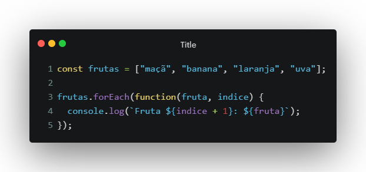
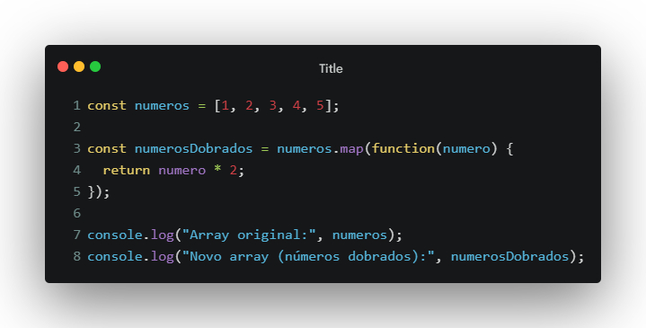
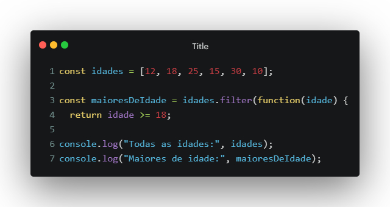
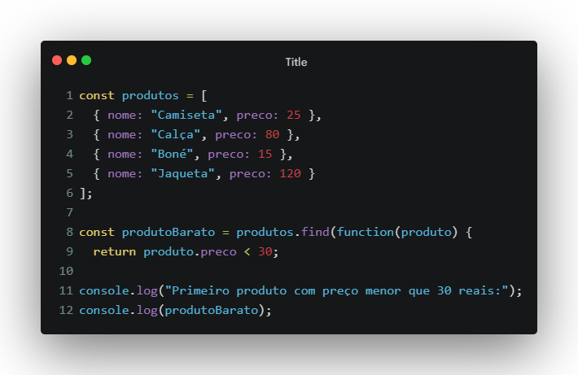
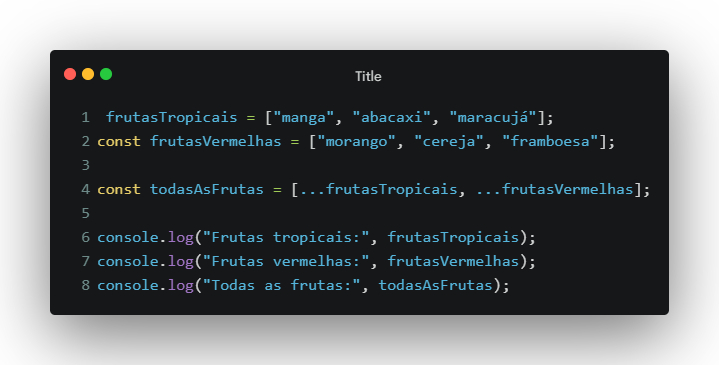

Tipos de Variáveis
Em JavaScript, contamos com 3 tipos de variáveis:
- let: variáveis locais, disponíveis apenas dentro de um bloco.
- const: valores fixos, que não podem ser reatribuídos durante a execução.
- var: possui escopo global, mas caiu em desuso após o ES6.
O que são Coleções?
São conjuntos de valores armazenados em uma única variável. A manipulação desses arrays tem suas próprias ferramentas e métodos. Através de colchetes e valores separados por vírgula, conseguimos organizar os dados em lista.
Componentes
- Array: a coleção de valores sobre a qual desejamos iterar.
- Callback Function: função executada para cada elemento do array.
- Current Value: valor atual do elemento no array.
- Index: posição (índice) do elemento atual no array.
Métodos de Array
forEach
O forEach() permite iterar sobre cada elemento de
um array e executar uma função específica. É uma forma prática de
percorrer e manipular arrays sem usar o loop
for tradicional.

map()
O método map() percorre o array e cria um novo com o resultado da função callback aplicada a cada elemento.

filter()
O filter() cria um novo array contendo apenas os elementos que passam em um teste lógico definido por você.

find()
O find() percorre o array e retorna o primeiro elemento que satisfaz uma condição específica.

spread
O operador spread (...) permite espalhar os elementos de um array, tornando possível combinar ou clonar arrays facilmente.
